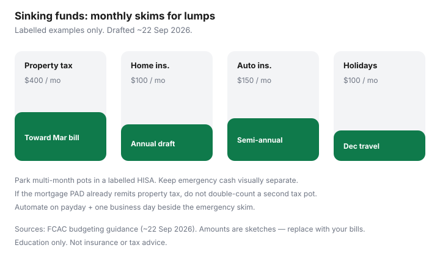

Personal Finance · Canada
Canadian Sinking Funds That Actually Work: Property Tax, Insurance, and Holidays
Canadian household costs arrive as lumps: property tax, auto and home insurance, winter tires, holidays, back-to-school. People call them emergencies because the chequing balance was never told they were coming. A sinking fund is a named monthly set-aside for a known bill so November stops feeling like a personality test.
Education only. Pair with zero-based budgeting and HISA parking. Framed for readers around 22 Sep 2026.
Disclosure: Banking and HISA accounts are offer types. Saving Optimizer may later add partner links. We do not currently claim partnerships. This is education, not tax or insurance advice.
Key takeaways
- Give annual Canadian costs a monthly job: property tax, insurance, holidays, and other known lumps.
- Park multi-month pots in a labelled HISA; keep near-term bills in the spending float.
- Do not double-count property tax already collected in a mortgage PAD.
- Automate transfers on payday beside the emergency skim — different labels, same calendar.
- Start with a short household list; five pots beat fifteen neglected ones.
Which annual costs deserve sinking funds in Canada
Priority pots for many middle-aged households:
- Property tax (if you pay the city yourself)
- Home or tenant insurance (if annual/semi-annual)
- Auto insurance and licence renewals
- Holidays and family travel
- Winter tires / major car maintenance
- Back-to-school or kids’ activities with known seasons
- Professional dues or licensing if your job requires them
Skip pots for true unknowns — that is the emergency fund’s job (HISA parking).
Monthly set-asides for property tax, auto/home insurance, and holidays
Math is division, not motivation. Annual property tax $4,800 → $400 / month. Auto insurance $1,800 billed twice yearly → $150 / month. Holiday target $1,200 → $100 / month. Write the due month on the pot name: “Property tax — March.”
| Pot | Annual sketch | Monthly skim |
|---|---|---|
| Property tax (self-paid) | $4,800 | $400 |
| Home/tenant insurance | $1,200 | $100 |
| Auto insurance | $1,800 | $150 |
| Holidays | $1,200 | $100 |

Where to park the cash (HISA vs chequing)
Chequing holds the current month’s bills. A labelled HISA (or sub-accounts at digital banks) holds pots with due dates beyond ~30 days. Notice savings can fit a property-tax date you can schedule — poor fit if the insurer can draft early. Compare access rules in the emergency parking guide. Keep sinking funds visually separate from emergency cash so Christmas cannot raid the furnace fund.
Avoid double-counting with mortgage tax installments
Many Canadian mortgages collect property tax in the monthly PAD and remit to the city. If that is you, the tax job is already inside housing — do not also sink the full annual bill. When the lender reassesses and the PAD jumps, update the housing line; do not invent a second pot. If you pay the city yourself (common with some credit-union or private setups), the sinking fund is mandatory.
Automate transfers on payday
Same mechanic as pay-yourself-first: payday + one business day, then split to emergency HISA and sinking pots. See payday automation and cashflow calendar. If cash is tight, fund property tax and insurance pots before holidays.
A household sinking-fund starter list
- □ Property tax (only if self-paid)
- □ Home/tenant insurance
- □ Auto insurance / plates
- □ Holidays
- □ Car maintenance / tires
- □ Kids’ seasonal costs (if applicable)
- □ Due dates labelled; monthly amounts automated
- □ Mortgage tax escrow checked so nothing is double-counted
Sources & date stamps
- FCAC — budgeting tools and guidance for planning irregular expenses (used ~22 Sep 2026).
- Municipal property-tax bills and lender tax-escrow statements — verify your own remittance path.
- CDIC / HISA parking context for where multi-month pots sit (cross-link; used ~22 Sep 2026).
Frequently asked questions
What is a sinking fund in Canadian household budgeting?
A named pot you fill monthly for a known future bill — property tax, insurance, holidays — so the lump does not hit the chequing account as a surprise.
Should sinking funds sit in a HISA?
Usually yes for pots you will not spend for months. Keep the near-term month of bills in chequing. Notice accounts can work for dated bills if you can wait out the notice period.
My mortgage already includes property tax — do I still need a pot?
No for the tax portion the lender already remits. Do not double-count. Confirm what the mortgage PAD includes each year when the tax bill changes.
How do I size a holiday sinking fund?
Pick a total you can defend in January, divide by the months left, and automate. If the number requires debt, shrink the holiday — not the emergency fund.
Are sinking funds the same as an emergency fund?
No. Emergency cash is for unknowns. Sinking funds are for known dates. Raiding the emergency HISA for Christmas is how both jobs fail.